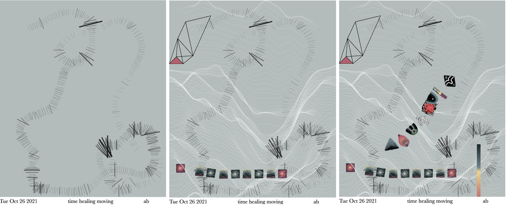
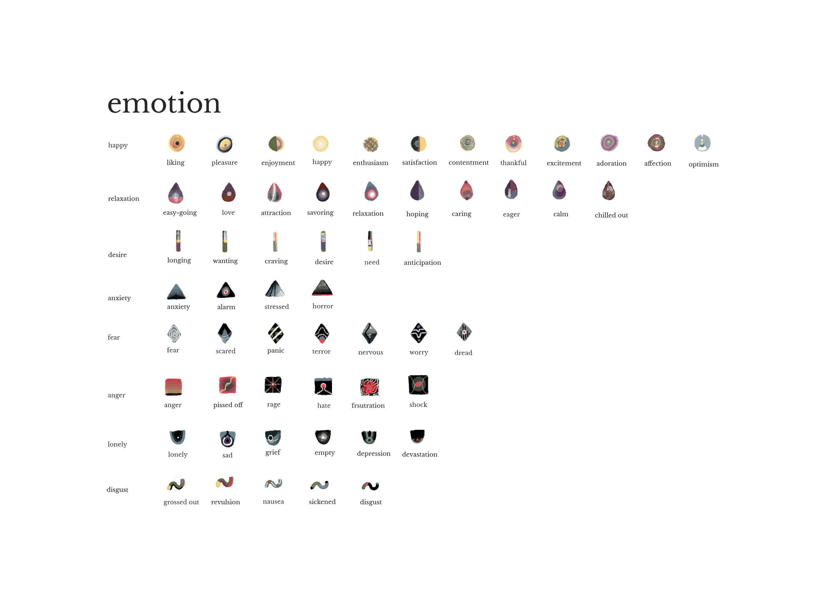
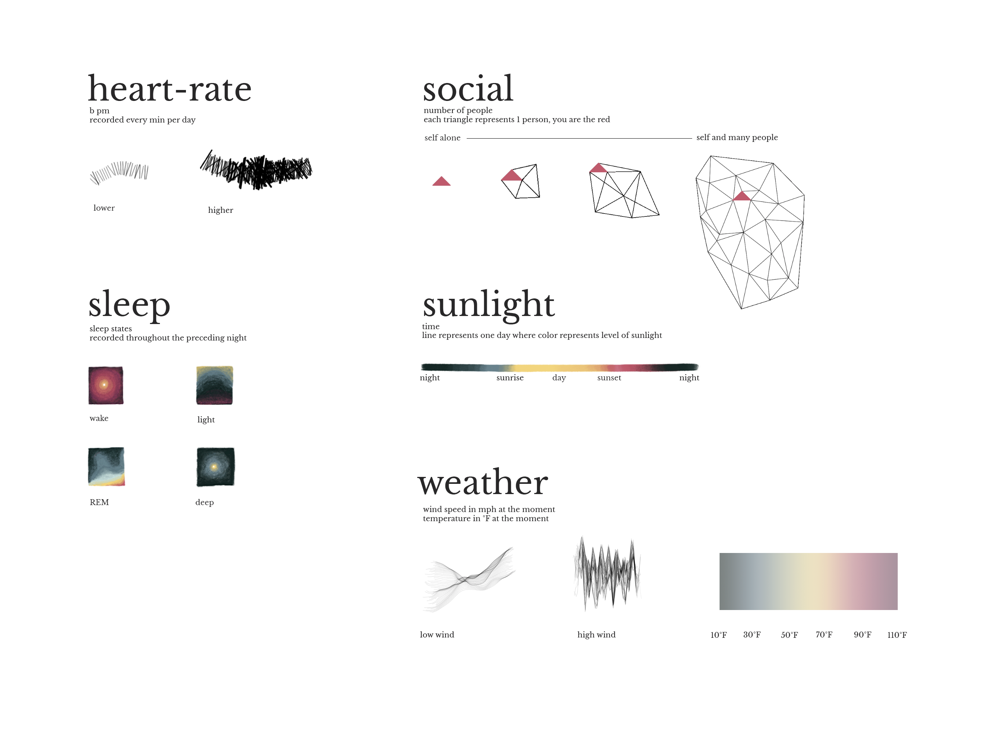

Designing Interactive Self Data Visualization Tool for Trauma Impacted Individuals
Introduction
There is simply too much information to keep track of the
complex narrative that makes up your own self-hood. When
you look in the mirror and see yourself, you can point out the
physical appearance, but it is often a much harder task to
recall accurate self knowledge. Self knowledge can be
difficult to unravel and recall because of the complexity of
themes within our psyche. There is not a mapped out
visualization with a detailed legend for navigating, but rather
a novel with sequences of interconnecting events that have
themes and story lines [13]. A common symptom of Posttraumatic
Stress Disorder is a sense of losing one’s body and
mind connection. There is a part of the brain responsible
for sensing the self called the “default state network” (DNS).
It’s how we know we are alive. Patients with PTSD show a
startling lack of activation in the self-sensing parts of the
brain [10]. Neurofeedback is used as a treatment that uses
visualization of the “electrical symphony” of a patient’s brain
waves to cause emotional arousal and in return enhances the
sense of identity [9]. In effort to build a similar mirroring effect,
Codex Endogenous provides a reflection of the self each
day. Generated from naturally emitted data, daily entries have
the ability to be recorded through a network of devices.
Codex Endogenous aims to construct a narrative about the
self by examining drawings produced from devices that
collect biometric, environmental, and self-reported
information. A daily representation of data is translated into
patterns that make up a visual language mapped on a canvas.
A user may collect pages that adds to their own narrative,
positively reinforcing identity and relation to one’s own
environment.
The inspiration for this project came from the practice of
meditational drawing. The process involves sketching a
simple mark on the paper repetitively in a meditative state
and watching the pattern build and grow into a larger
complex form. Then the creation of a new pattern begins,
builds complexity and exists against all the previous patterns
on the page. With the ability to create graphics with creative
coding and integrating devices that are best described as the
Internet of Bodies, a term described by Giorgia Lupi as
technology that captures and stores information about a
person’s location, bodily functions, audio and visual
perception and even self recorded information that would
reflect an individual’s thoughts [4].
Background
This project is situated heavily in generative design as an art
form. Imagery is created by constraints defined by the data
that is streaming through a program. The art form originated
in cybernetics and general systems theory in the late 1960’s.
Roy Ascott coined the term “cybernetic vision”, referring to
concepts drawn from computer science. Methods of
computing to mathematically display graphics using
algorithms derived from artificial intelligence or artificial life
[1].
Codex Endogenous utilizes self-tracking, otherwise known
as The Quantified Self. Dating back to the first cave paintings,
humanity has been compelled to record themselves for thousands
of years. When this complex human tendency to preserve
themselves combines with the power of computation,
the conversion of human bodies and minds into data flows are
figuratively reassembled for the purpose of self-reflection and
interaction [8]. The quantified self is defined by using
“invisible technology” in order to collect data that reflects the
daily lives of people, like a data double. Motivation to collect
such data comes from a desire to change or improve.
According to Ksenia Fedorova, technologies that utilize
biosensing to gain an accurate “picture” of one’s mental and
bodily state would help create balance with more “informed”
behavior [2]. This project attempts a snapshot for a person to
distinguish and identify their mental and bodily state, while
grounding themselves in the environment. Data is taken from
streams of data that is left by the self during the span of 24
hours. Later the data is recalled in a one-time journal-like
task.
James divided the history of self into three parts – its
constituents, the feelings and emotions they arouse, the
actions to which they prompt. When we use sensors to
automatically track ourselves, we are reminded that our
ordinary behavior carries more obscure signals that can be
used to inform our behavior [12]. The collection of the data
for this work aims to seek information that makes up the
empirical self. William James grouped all of the components
of the empirical self into three subcategories: (1) the material
self, (2) the social self, and (3) the spiritual self. In this work,
items of data that include bio-metric, sleep, and environmental
information can be classified as the material self as it pertains
to the tangible objects, people or places that carry the
designation my or mine. Data collected about who people
interact with each day is classified as the social self. In effort
to support the spiritual self, thought and emotional data
through daily survey is collected.
The way in which personal narratives are recalled from
memory inspired the modality, origin, and meaning of data
that was used in developing drawings each day. The
philosophy behind the method of data collection is heavily
informed by the concept of “Data Humanism”, coined by
Giorgia Lupi. The idea addresses the issue that as a result of
the rise of Big Data, attempts at complex infographics
become merely eye candy and leave us with copious
amounts of unreadable and cheap graphs and pie charts. In
actuality, the conventional nature of these visualization lacks
depth and exploration in possibilities of what could represent
more meaningful data to the viewer [7].
Self Data Visualization and Trauma
Semiotic explorations within personal data have been used as a tool for simulating and representing
the inner experiences of individuals using data trails [3], but there is an absence in
work regarding tools for individuals who are prone to
experience lack of self, such as patients diagnosed with Post
Traumatic Stress Disorder. The combination of using self
data as visual feedback integrated as an artistic representation
is designed to act as an intervention to promote self-healing.
Codex Endogenous was developed as a tool for an individual
to acquire information to act as scaffolding to one’s own self-concept,
a collection of beliefs and thoughts that make up an
individual’s perception of the self. A negative self-concept
is commonly reported amongst patients diagnosed with Post
Traumatic Stress Disorder [6]. The page like structure of
Codex Endogenous provides a narrative based experience
similar to collecting pages in a journal. It is a procedure of data
collection that is then translated into markings on a page
through the means of generative art and data visualization.
The form of the markings are completely determined
by variables that change based the data collected for graphical
output onto a page. This means that the graphical form of the
artistic daily data drawing is completely unique upon the self,
metaphorically acting as a mirror and acting on an
individual’s inner experience. For trauma-impacted
individuals whose inner experience also includes the lack of
sense of self [11], this intervention is designed to stand in as
scaffold ing that otherwise is hindered or disabled.
We can imagine a simple scenario for the use of daily data
drawings. A person is diagnosed with PTSD and starts to
receive outpatient care. Their treatment plan includes
establishing care with a psychiatrist and regularly seeing a
counselor for talk therapy. While they are receiving care on
their own, they start to think about journaling as a form of selfcare.
Codex Endogenous provides them with a free form
interface to draw out their own daily data trails which
provides them with feedback about their self-information
generated from factual data. Their idea of self is now more
enhanced.

Figure 1: Example of beginning, middle and end using a mouse-drag interaction
to draw out patterns for a daily data drawing.
Methods
The thought process behind the format and visual
representation in this project is informed by an understanding
of human memory. The term implicit memory refers to when
a participant does not deliberately attempt to collect
information from the past, yet memory is still expressed in the
performance of a task (e.g. walking or playing a learned song
on the piano). Explicit memory is exhibited when participants
consciously and deliberately attempt to recollect information
from the past, such as life events that are primarily sensory
experiences (e.g. recounting a childhood memory of having
dinner at their grandparents house) [5]. Self Knowledge requires
both implicit and explicit memory to form a personal
narrative. The following describes the ways in which data
collection parallels memory and functions as the data that
makes up the self to be used for daily data drawings.
Given this information, Codex Endogenous proposes that
there is a connection between data as personal narrative from
memory and the modality in which data from devices are
collected. When translated into the visual output, the journal like
output for personal use is a form of Data Humanism. This
is because visually representing self-data in respect of self
psychology, such as the empirical self or what makes up a
person’s self-concept and human memory, we can approach
the design of a visualization with more meaning and thoughtfulness.
Iterating on Lupi’s words – “We are ready to question
the impersonality of a merely technical approach to data and
to begin designing ways to connect numbers to what they really
stand for: knowledge, behaviors, people [7].”, this work
takes into consideration a humanistic approach with respect
to the physical.
A survey of data collection was conducted to deepen the
understanding between the usage of a device and how the output
of data is internalized. A myriad of devices was tested,
such as a Fitbit tracker, web API’s, an eye tracker, cameras,
and sensors to detect the external environment. The selection
of data collection methods had to satisfy the following
criteria:
There is a direct and strong connection oneself narrative to
the data that is output.
A wearable device functions symbiotically with the self
with minimal disruption during the day.
There is a low sense of surveillance.
The data can be retrieved on the web via API.
In this project, the method of collection the implicit
memory data is straightforward. This is because
implementation is based on setting up the stream of data and
making it available to be used when it comes time to create a
daily drawing. This was done using JavaScript. On the other
hand, it was a more involved design process to achieve a
accessible and meaningful web interface that collects
emotions, social information and thoughts.
Because of the lack of assessing a full range of emotional
experiences in previous surveys to measure emotion, Harmon
et al. developed a questionnaire to asses situationally
induced emotions that expand the range of mood states seen
previously that asses only specific ranges of emotions such as
anxiety, pride, and shame and guilt. The importance of a
tool that assesses emotion comprehensively is because the
same event occurring in two different individuals’ life may
evoke two different emotional states between the two.
Another reason of importance is the possibility of an event
evoking mixed emotions. The Discrete Emotions
Questionnaire developed by Harmon et al. includes “basic by
prominent emotion theories” that allows individuals to
distinguish emotions and determine a level of which they are
feeling them. The questionnaire declares eight different
broader categories of discrete emotions: Anger, Disgust, Fear,
Anxiety, Sadness, Desire, Happiness, and Relaxation.
Amongst these larger categories, subcategories consisting of
more specific emotions.
Codex Endogenous takes this list of emotions to be
checked off each day. To be completed in a way that imposes
less burden on the user, there is no scale like there is in
the original questionnaire. While there is worth in denoting
the intensity of emotions each day and reflecting it in a
visualization can be achieved easily, the focus was on
minimizing burden in completion of the form while
maximizing the sense of being able to identify personal mood
states, bring it forth to attention and opening the door for
reflection. It is intended that every day the form would be
completed. The submitted data goes to a database for later
retrieval and visual encoding during the data drawing stage.
The social and thoughts form works the same way as
emotion and is submitted to a database. The user recounts
their day and notes memorable names of those who they
interacted with during the day. The thoughts form prompts the
user to describe their day in 3 simple words. This answer
is used to title the drawing. The purpose of the minimalist
nature of only writing 3 words is because it creates a task
to pull the most important elements remembered from the day
and in turn creates less cognitive load when going back into
the archive of daily drawings. This feature contradicts the
conventional function of keeping a journal where meandering
thoughts get written down.


Figure 2: Legend to each pattern correlating to heart rate,
sleep, social, environmental and emotional data ©Respect
Copyright.
Conclusion
Codex Endogenous seeks to provide groundwork for a
procedure to concurrently collect personal data pertaining to
aspects of the self. Two main processes make up the
procedure: observation of self data trails, including biometric
and environmental data produced by our network of
devices and an intervention for collecting emotional, social,
and thought data. The journal-like collection of daily data
drawings aims to provide an accessible and non invasive way
for individuals to receive a semblance of neuro-feedback, as a
complimentary tool to be combined with professional
psychiatric treatment and counselling for PTSD patients.
Reference
[1] Boden, M. A., and Edmonds, E. A. What is generative
art? 20(1):21–46. Publisher: Routledge eprint:
https://doi.org/10.1080/14626260902867915.
[2] Fedorova, K. Tactics of Interfacing: Encoding Affect in
Art and Technology. Leonardo Series. MIT Press.
[3] Khan, A. H.; Snow, S.; Heiner, S.; and Matthews, B. Disconnecting:
Towards a semiotic framework for personal
data trails. In Proceedings of the 2020 ACM Designing
Interactive Systems Conference, 327–340. ACM.
[4] Lupi, G. Internet of bodies: Our connected future.
[5] Marsolek, C. J. Implicit memory. In Wright, J. D., ed., International
Encyclopedia of the Social & Behavioral Sciences
(Second Edition). Elsevier, second edition edition.
709 – 713.
[6] Mu¨ller-Engelmann, M., and Steil, R. Cognitive restructuring
and imagery modification for posttraumatic stress
disorder (CRIM-PTSD): A pilot study. 54:44–50.
[7] PrintMag. Data humanism: The revolutionary future of
data visualization.
[8] Ruckenstein, M. Visualized and interacted life: Personal
analytics and engagements with data doubles. 4(1):68–84.
[9] Stewart, B. L., and Dadson, M. R. 2012. Integrative
therapeutic interventions of phase-oriented treatment: Additional
reflections on the case of lynn. Journal of Aggression,
Maltreatment & Trauma 21(3):331–350.
[10] Van der Kolk, B. 2015. The Body Keeps the Score:
Brain, Mind, and Body in the Healing of Trauma. Penguin
Books.
[11] Vanderpoel, E.; Bruton, A.; and Cooke, K. Color Problems:
A Practical Manual for the Lay Student of Color.
Sacred Bones Books.
[12] Whitson, J. R. Gaming the quantified self. 11(1):163–
176.
[13] Wilson, T. D., and Dunn, E. W. Self-knowledge: Its
limits, value, and potential for improvement. 55(1):493–
518.